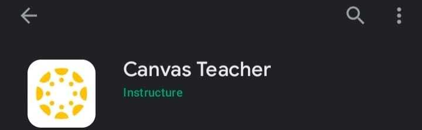

Basicas
-
¿Como puedo saber cual es mi codigo y contraseña?
Si no conoces tu código y contraseña para ingresar a las plataformas digitales, podrás contactar a SAE, te solicitarán datos personales para validar tu usuario.

Si no conoces tu código y contraseña para ingresar a las plataformas digitales, podrás contactar a CAD, te solicitarán datos personales para validar tu usuario.
-
¿Como inicio sesion?
Ingresa a "Iniciar Sesion" en la barra superior, luego coloca tu correo y contraseña correspondiente
-
¿Como reviso mis todos mis incidentes?
Luego de Iniciar sesion ingresa a la pestaña tablero, en esta encontraras todos tus incidentes enviados y su estado correspondiente
Movil
-
¿Como ver la informacion de mis incidentes en movil?
Puedes ingresar a la Mesa de Ayuda desde tu navegador movil
-
¿Que aplicaciones debo tener instalado de la utp?
Todos nuestros usuarios, estudiantes, profesores y trabajadores necesitan la aplicacion de OutLook para el manejo de correo electronico
Si eres estudiante:
Si eres profesor:

Si eres padre de familia:
Cuenta
-
¿Como cambio de contraseña?
Si deseas cambiar tu contraseña para ingresar a las plataformas digitales, puedes hacerlo en https://contrasena.utp.edu.pe

Pagos
-
¿Donde puedo saber mis pagos?
Puedes ingresar al Portal del Estudiante y en el apartado de pagos, tambien en el aplicativo we UTP+
Entrega
-
¿Donde puedo ver mis reclamos e incidentes?
Todos tus tickets pueden ser observados desde tu tablero de navegacion
-
¿Comp puedo saber si mis problemas estan solucionados?
Puedes ver tus tickets solucionados en la pestaña "Solucionados" de tu tablero. Ademas, en el tablero principal puedes ver el estado de tus tickets.